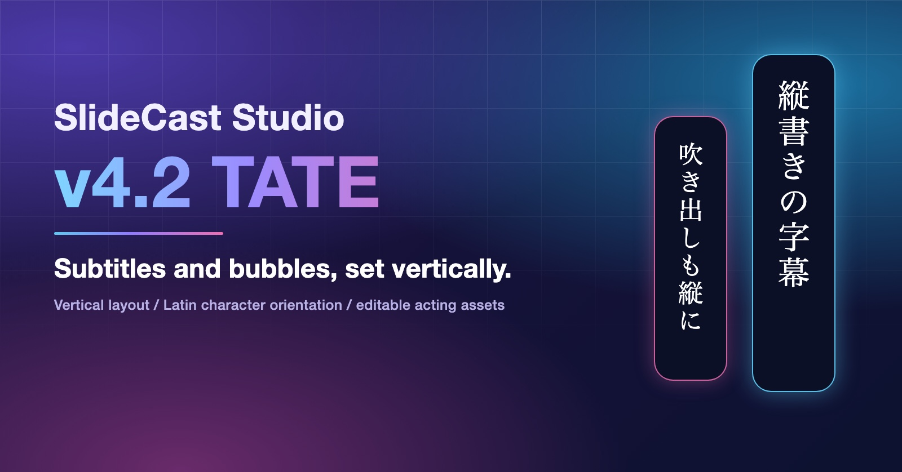
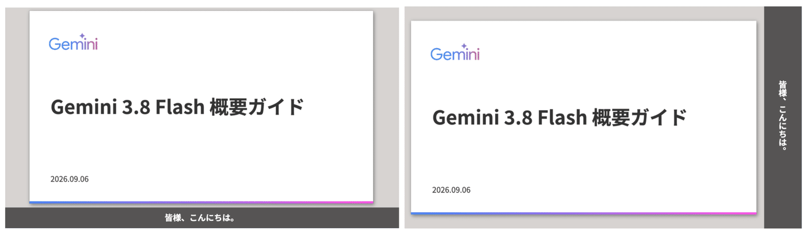
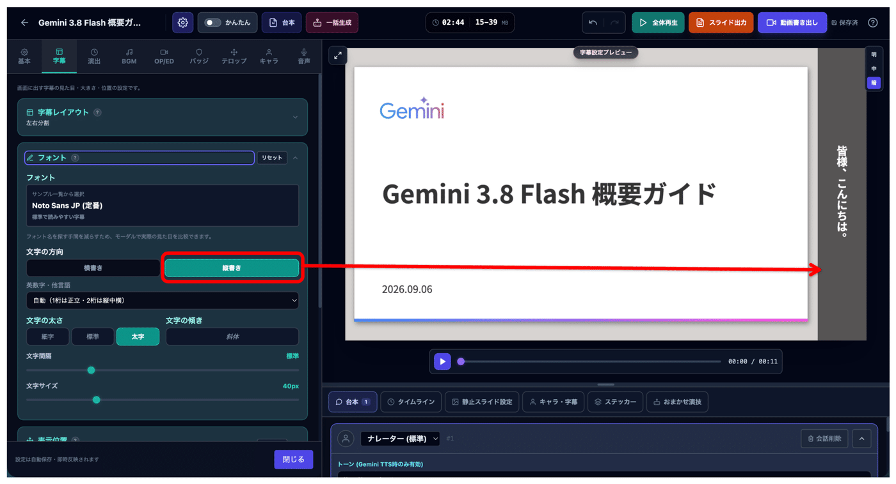
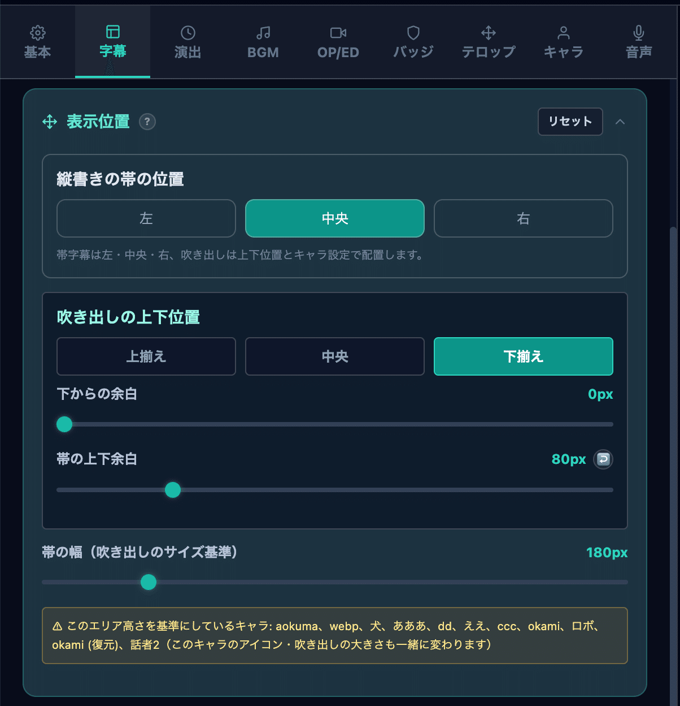
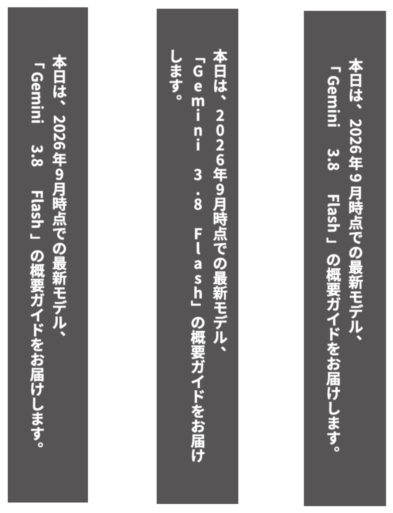
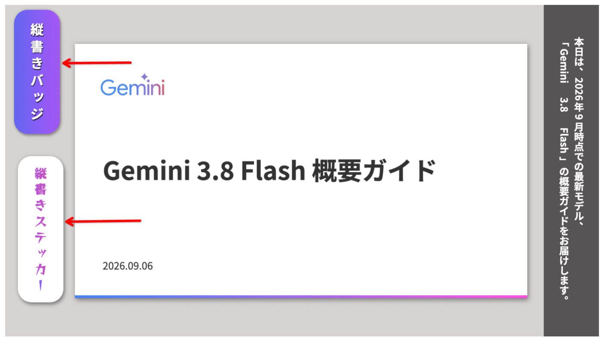
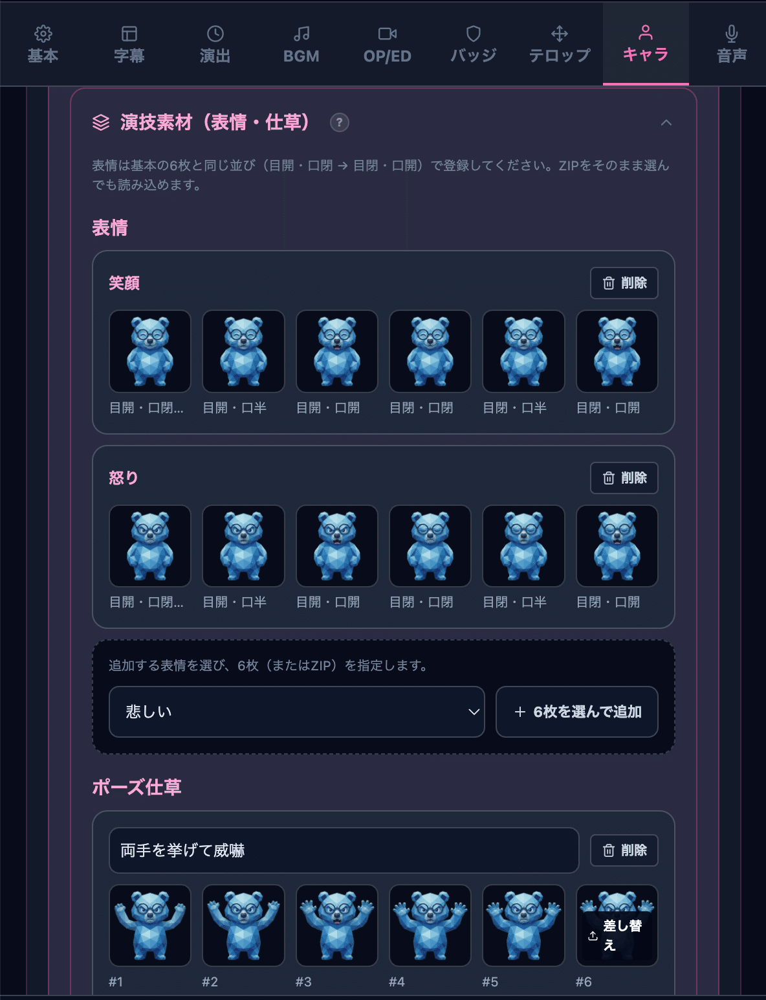
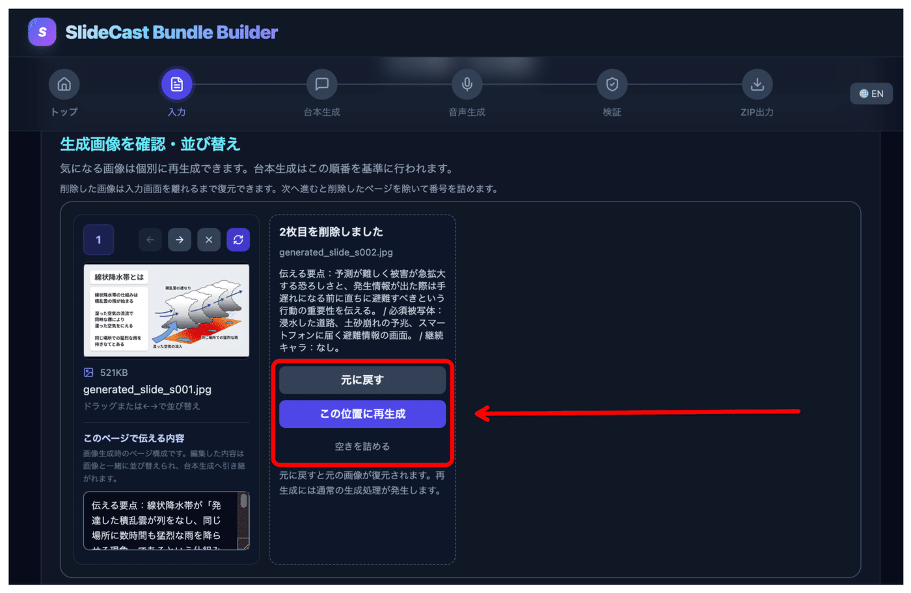

Text direction
Switch subtitles and speech bubbles to vertical
SLIDECAST STUDIO · UPDATE
Update — vertical subtitles, vertical speech bubbles and editable acting assets

👋 OVERVIEW
🌐 About the screenshots
The interface screenshots on this page use the Japanese edition. The English captions explain the relevant controls and behaviour. “TATE” (縦) means vertical writing, the traditional Japanese layout that reads from top to bottom and right to left.
SlideCast Studio has been updated to v4.2 “TATE”.
The previous release, v4.1 “FRAME”, let you refine the image, character and subtitle layout on each slide. This release focuses on making videos that present their text vertically.
Vertical writing suits literary and traditional Japanese material: narrated novels and essays, haiku and tanka, product introductions in a Japanese style, language teaching material, and manga-style dialogue. You can switch to it without redoing your horizontal settings.
Switch subtitles and speech bubbles to vertical
Place it left, centre or right, with a split layout
Upright, rotated, or combined into the line
Vertical text plus adjustable inner padding
Surprised, troubled and thinking
Replace, add and delete expressions and gestures
Tail shape, line wrapping and drag positioning
Undo a deleted image or regenerate it in place

The Subtitle tab of the settings dialog now has a text direction setting.
Choose between horizontal (as before) and vertical. The switch applies to both the subtitle band and the speech bubbles of your characters. Font, text size, colour, outline and shadow settings carry over unchanged.

🔒 Horizontal remains the default
Existing projects open exactly as before. Switch only the projects you want to present vertically.
Simple mode shows a note on screen when a project is set to vertical. Change the direction and placement from the Subtitle tab in the detailed settings.
In vertical mode the position controls change to their vertical equivalents.
The vertical band position can be set to left, centre or right; right is the default. Japanese vertical text reads from right to left, so the default already reads naturally. Centre suits a single short line placed in the middle of the frame. For the left and right positions, the side margin (0–500px) sets the distance from the edge of the frame.

| Vertical setting | Range | Horizontal equivalent |
|---|---|---|
| Band width (bubble size reference) | 50–800px | Band height |
| Band vertical padding | 0–400px | Side padding |
| Band side margin | 0–500px | Distance from the frame edge |
| Speech bubble alignment | Top, middle, bottom | Bubble placement |
With the separated layout, vertical mode presents it as a left/right split: the subtitle takes one side of the frame and the visuals fill the rest. It keeps subtitles off your documents and photos while staying vertical.
⚠️ When the text does not fit the band
The settings screen shows a warning asking you to split the script or adjust the text size. Split the script, or revisit the text size and band width.
A new setting offers three ways to present Latin characters inside vertical text.
One digit upright, two digits combined into the line; other Latin runs rotated (default)
Every character stands upright, stacked down the line
Words and URLs stay together and turn on their side

The default is Automatic, which keeps dates and quantities such as “2026年” and “10月” easy to read. Choose the rotated option when a product name or URL should stay legible as a word, and the upright option when numbers or symbols should line up one per row.
Punctuation, small kana, brackets and the long vowel mark are drawn in their vertical positions and orientations as well.
The text direction setting is also available for badges and text stickers.
As with subtitles, you set the direction and the Latin character treatment individually. Place a vertical title in a corner of the frame, or add a vertical label beside a document. You can also keep subtitles horizontal and make only the stickers vertical.

Badges and text stickers gained horizontal padding and vertical padding settings. Both accept 60%–160% in 5% steps and default to 100%, so text can sit tightly inside its background or breathe more.
When you resize a text sticker by dragging its edge, the padding is preserved as the text rewraps and scales.
🔒 Existing data is unchanged
Items saved before this release keep their previous appearance.
With happy, sad and angry, six expressions are now available.
Characters gained the surprised, troubled and thinking expressions. Automatic acting can pick them up from the wording of a line.
🔒 Existing characters look the same
Only the happy expression is enabled automatically, as before, and an expression without artwork is never used.
Character settings gained an acting assets panel for expressions and gestures, so material imported from a MouthLoop character pack can be edited later.

You can add a missing expression without rebuilding the whole pack, and the same panel is available from character settings in Simple mode. Any acting that referenced deleted material falls back to the standard presentation.
Vertical support came with a review of how speech bubbles are drawn.
A long line is rebuilt to remain readable wherever you move the bubble. Text that fitted before the move stops at the position where the whole line still fits at the minimum scale.
Long standing explanations now open from a “?” button.
The export procedure and the available settings are unchanged; this only reduces how much you have to scroll to find them.
This release focuses on recovering an image you deleted by mistake.
When you delete an image, a placeholder stays in its position and offers three choices.
Restore the deleted image as it was
Create a new image in the same position (a normal generation runs)
Give up on the image and renumber the remaining pages

⏳ Recovery lasts until you leave the input screen
Moving to the next step renumbers the pages without the deleted ones. Starting a full regeneration also discards the recovery data.
Buttons to move an image left or right, and to regenerate just that image, were added to the list. Actions that are hard to undo, such as deleting or regenerating, now ask for confirmation — including inside embedded environments such as Gemini Canvas.
Image generation can be cancelled while it runs, and the screen says so when it is. The updated build opens from the Bundle Builder link inside SlideCast Studio; if you saved the old link, open it from the app instead.
💰 Generation costs still apply
Regenerating in place, like any single-image regeneration, runs a normal generation. If you use your own API key, keep its usage charges in mind.
A few points worth knowing about this release.
If you have purchased SlideCast Studio, copy v4.2 from the same paid note shared link as before.
💾 Make a backup first
If you want to keep your existing projects, libraries and settings, create a backup from the data save screen before updating.
To update the GAS edition while keeping the same URL, replace “AppBundle.html” from the v4.2 distribution folder, apply it to your existing Apps Script project, and redeploy the existing deployment as a new version.
Detailed update steps for the GAS edition
For the local HTML edition, download “SlideCast Studio v4.2 (local edition).html” and open it. A new Apps Script project or a different browser will not show your earlier data automatically; restore it from a backup instead.
One script, two very different impressions.
v4.1 “FRAME” was about where things sit within a single slide. v4.2 “TATE” is about which way the text is read. Horizontal stays as readable as ever, and material that suits vertical writing can now be set vertically — from the same script.
Vertical subtitles suit traditional Japanese subjects, literary material and a book-like presentation. Try one short slide first and compare the two directions.